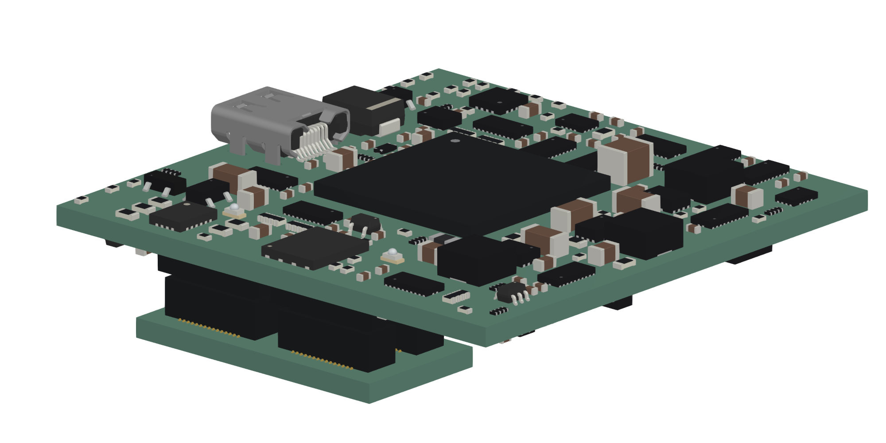

Manufacturing review
The eight-layer HDI stack-up and blind-via rules are proposed. PCBWay has been contacted; supplier acceptance is still pending.
Weekend update · 3–4 October 2026
The current research board uses XC7A35T-2CSG325I in a 41 × 41 mm layout. Connector arrangement, power distribution and ASIC timing remain under review.

Loading current 3D preview…
Drag to rotate · scroll to zoom · right-drag to pan
XC7A35T-2CSG325I · R37 · 4 October. Headboard with connector-only mating template; routing hidden. The lower template is not a functional LDO board. Populated fit and fabrication remain unqualified.
FPGA PCB
Over the weekend I worked on the FPGA board layout and design review, including the connector arrangement, power distribution, and routing approach. I completed the 3D component models and put together a review PDF with all 18 schematic sheets. I also contacted PCBWay to confirm the proposed eight-layer HDI stack-up and blind-via rules before committing to detailed routing. Routing is still unfinished, and I’m checking the timing constraints for the ASIC interface.
The eight-layer HDI stack-up and blind-via rules are proposed. PCBWay has been contacted; supplier acceptance is still pending.
The connector-only lower-board template remains a placement reference. Populated fit still needs checking.
Revision history
R37 is the preserved 4 October research revision. R39 is the current compact FPGA review. The older paused R35 study and the published 25T placement retain their own routing status and counts.